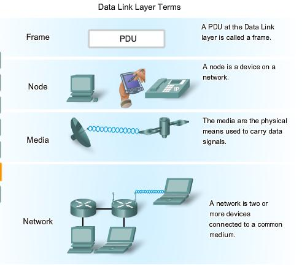
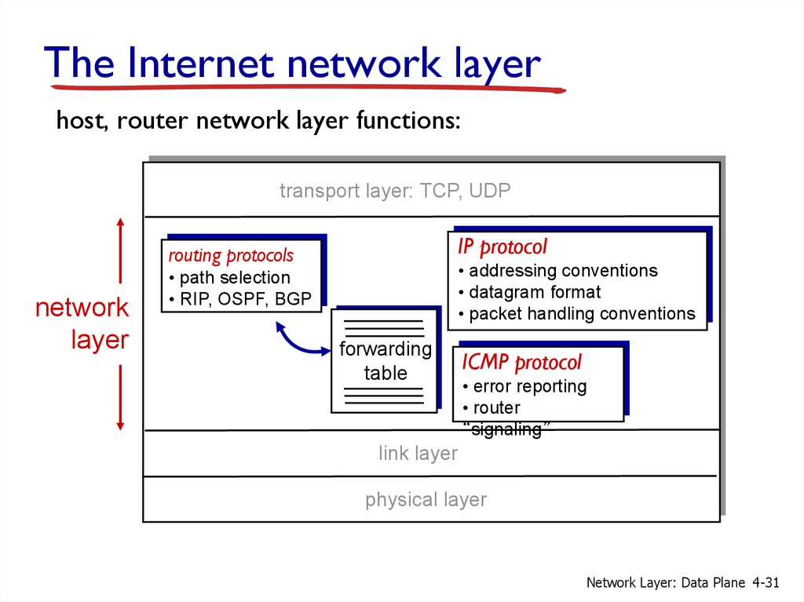
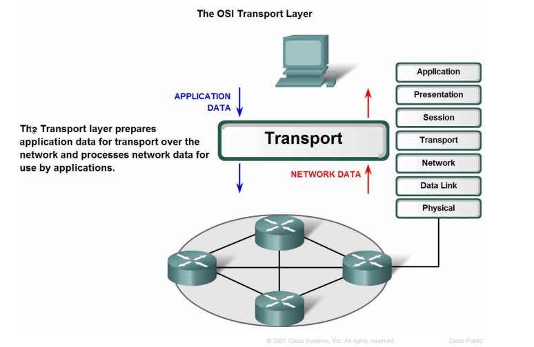
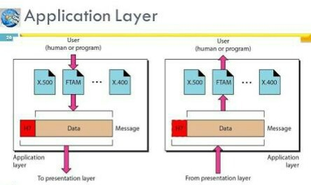

Link Layer

In computer networking, the link layer is the lowest layer in the Internet protocol suite,
the networking architecture of the Internet.
The link layer is the group of methods and communications
protocols confined to the link that a host is physically connected to. The link is the physical and
logical network component used to interconnect hosts or nodes in the network and a link protocol is
a suite of methods and standards that operate only between adjacent network nodes of a network segment.
Despite the different semantics of layering in TCP/IP and OSI, the link layer is sometimes described as a
combination of the data link layer (layer 2) and the physical layer (layer 1) in the OSI model. However, the
layers of TCP/IP are descriptions of operating scopes (application, host-to-host, network, link) and not
detailed prescriptions of operating procedures, data semantics, or networking technologies.
Internet Layer
 The internet layer is a group of internetworking methods, protocols, and specifications in the Internet protocol suite that are used to transport network packets from the originating host across network boundaries; if necessary, to the destination host specified by an IP address. The internet layer derives its name from its function facilitating internetworking, which is the concept of connecting multiple networks with each other through gateways. The internet layer does not include the protocols that fulfill the purpose of maintaining link states between the local nodes and that usually use protocols that are based on the framing of packets specific to the link types. Such protocols belong to the link layer. Internet-layer protocols use IP-based packets.
Transport Layer
 In computer networking, the transport layer is a conceptual division of methods in the layered architecture of protocols in the network stack in the Internet protocol suite and the OSI model. The protocols of this layer provide host-to-host communication services for applications. It provides services such as connection-oriented communication, reliability, flow control, and multiplexing.
Application Layer
 An application layer is an abstraction layer that specifies the shared communications protocols and interface methods used by hosts in a communications network. The application layer abstraction is used in both of the standard models of computer networking: the Internet Protocol Suite (TCP/IP) and the OSI model. Although both models use the same term for their respective highest level layer, the detailed definitions and purposes are different.